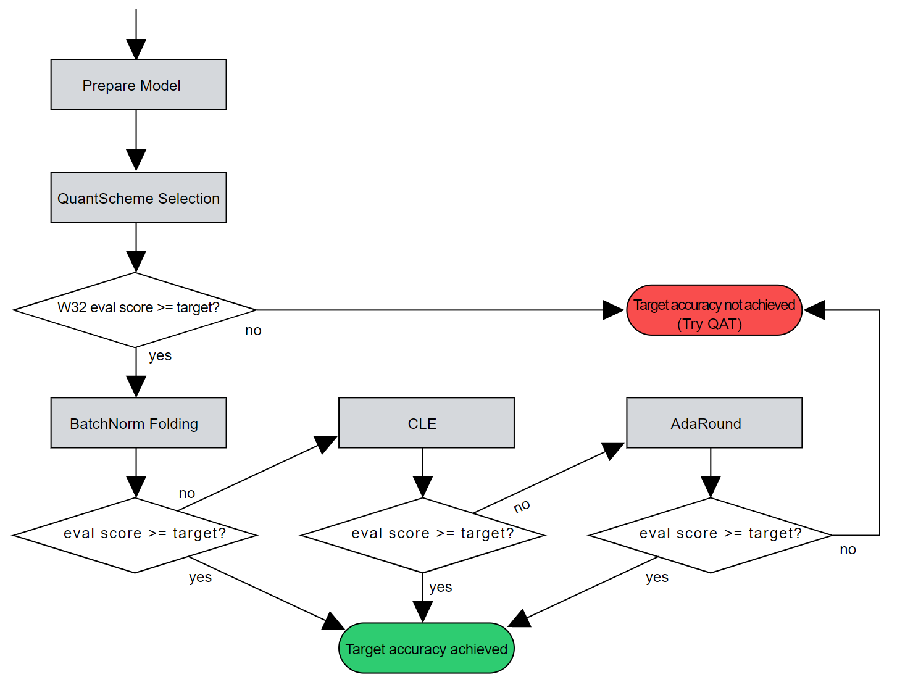

AIMET AutoQuant
Overview
AIMET offers a suite of neural network post-training quantization techniques. Often, applying these techniques in a specific sequence, results in better accuracy and performance. Without the AutoQuant feature, the AIMET user needs to manually try out various combinations of AIMET quantization features. This manual process is error-prone and often time-consuming.
The AutoQuant feature, analyzes the model, determines the sequence of AIMET quantization techniques and applies these techniques. In addition, the user can specify the amount of accuracy drop that can be tolerated, in the AutoQuant API. As soon as this threshold accuracy is reached, AutoQuant stops applying any additional quantization technique. In summary, the AutoQuant feature saves time and automates the quantization of the neural networks.
Workflow
Before entering the optimization workflow, AutoQuant performs the following preparation steps:
Check the validity of the model and convert it into an AIMET quantization-friendly format (denoted as Prepare Model below).
Select the best-performing quantization scheme for the given model (denoted as QuantScheme Selection below)
After the prepration steps, AutoQuant mainly consists of the following three stages:
BatchNorm folding
These techniques are applied in a best-effort manner until the model meets the allowed accuracy drop. If applying AutoQuant fails to satisfy the evaluation goal, AutoQuant will return the model to which the best combination of the above techniques is applied.

AutoQuant API
Please refer to the links below to view the AutoQuant API for each AIMET variant:
AutoQuant for PyTorch
AutoQuant for Tensorflow
AutoQuant for ONNX